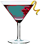

Författare: GREENDOG
@ 2011
Hur allt började
Vi har året 3001. Rosali är 39 år. Hon lever på jorden tillsammans med sin sambo Anders och två hundar. Rosali har inte känt sig riktig lycklig på den sista tiden.
Före hon fyller 40 år vill hon göra något nytt och spännande.
Så kommer det sig att hon hälsar på sin bror på planeten Atlantica. Kulturen där är annorlunda än på jorden och Rosalis känslor går huller om buller. Kan Rosali ändra sitt tråkiga liv och blir hon lyckligare efter resan?Tidigare trodde man att det finns människor bara på jorden. Alla som trodde på främmande levande väsen på andra planeter var löjliga. I dag skriver vi året 3001 och det är vanligt att resa genom universum till olika planeter.
Nu har de flesta människor på jorden minst en familjemedlem som bor utanför jorden.
Jag har också en bror som flyttade sista till planeten Atlantica. Människorna på planeten Atlantica gäller som särskilt fridsamma, snälla och levnadsglada. Jag har varit på många planeter.Som professor för historik är jag mycket intresserad av olika kulturer och språk. På planeten Atlantica har jag inte varit hittills.
Just nu är jag inte så lycklig med min livssituation. Egentligen har jag ingen anledning att vara olycklig. Jag bor tillsammans med Anders, som verkligen ör en snäll pojkvän och med mina hundar Jack & Jacki. Men alla saker verkar plötsligen lite tråkiga. Nästa vecka fylla jag 40 år och jag önskar mig före det ett litet äventyr.Därför vill jag resa till planeten Atlantica och hälsa på min bror.
Med hjälp av min dator bokar jag en plats på rymdskeppen till rymdstation Atlantica- Central, huvudstad på planeten Atlantica för nästa helg.Clarissa
Det lördag och dags att lämna mina hundar Jack & Jacki hos min kompis Clarissa.Clarissa väntar redan och står i dörren för att hälsa oss. Hundarna tycker mycket om Clarissa så jag måste inte göra sorgsen.
Vi fick kaffe och pratar lite om Anders min pojkvän. De sista tiden undrade jag oftare om jag älskar honom ännu eller om vi bara är tillsammans för bekvämlighet.
Med lite distans kan man lättare tänka på sådana saker. Jag går med den här insikten och vi tar adjö.
Resan
Jag åker direkt till stationen Berlineka Nord, där alla rymdskepp i riktning Urban, Melanchton och Atlantica startar, parkerar mitt fordon i p-huset och går till check-in-terminalen för planeten Atlantica. Rymdskeppet är redan öppet så jag går ombord och gör det bekvämt för min 5-timmar-resa. Efter start går jag till matsalen.
På matsedeln finns såväl Jordmaträtter som Atlantica-maträtter. Jag bestämmer mig för en Atlantica-maträtt som består av

att dricka tar jag grönt vinMaten är jättegod.
Jag beställer en flaska grönt vin till och går tillbaka till min plats. Det finns 3 timmar restid kvar, så jag hat gott om tid att läsa brevet från min bror en gång till.Han berättar om sin arbetsplats hos Trooper, en mycket känd fordonsfirma som exporterar snygga rymdfordon till alla dela av universum. Han jobbar som säkerhetsingenjör och gör ofta testfärder med ett nytt fordon. Han lovar att någon gång kan jag få följa med på en testfärd. De flesta arbetskamrater kommer från Atlantica, men det finns också många som kommer från olika planeter. Från Jorden jobbar bara två i hans arbetsgrupp. Språkproblemet har man löst enkelt. Det finns som huvudspråk ett bildspråk. Alla bilder som man kan väljer förstår man i alla kulturer samma. Denna bildkommunikation fungera med hjälp av någon glasögon.
Och den är kallad kommunikatör.Det betyder att man inte måste lära sig ett nytt språk om man vill bo och arbeta på Atlantica. Lite konstig och ovanlig tycks bostaden som min bror beskriver. Han bor tillsammans med tre kvinnor. Här kallas flera kvinnor och en man en familj. Så på planeten Atlantica bor alltid flera kvinnor tillsammans. Och om kvinnorna bestämmer sig för att grunda en familj med barn söker de en man som passar. Min bror tycker om situationen och menar att det kanske passa också för mig. Jag är lite nervös eftersom jag vet inte hur jag ska förhålla mig. Jag tänker på ett orientalisk harem och har ingen aning hur man känner sig i det.
Jag är 39 år gamman och jag har ofta tänkt att jag vill ha ett litet äventyr före jag fyller 40 år. Kanske är det nu dags för någonting nytt. Jag läser vidare i brevet och uppmärksammar att Patrik inte skriver så mycket om hur det ser ut där. Bara att man året runt har 27 grader och att man inte har gator för bilar bara gågator. Fordonen åker i luften. Flaskan grönt vin verkar nu i min kropp och mitt huvud. Långsamt glömmer jag min oro och får lust på äventyrshelgen.
Framkomst
Tiden går snabbt och vi är framme. Jag tar alla mina saker och väntar att rymdskeppet anlägger. Vid utgången får jag syn på min bror. Han vinkar till mig, jag vinkar tillbaka. Sedan ser jag att han inte kommer ensam. Han är i sällskap med en kvinna. Både har på sig kostymer jag inte har sett förut, en sorts rödblåfärgada rymdkostymer.
Min bro överlämnar mig kommunikatören och säger det här är krav för att prata med varandra.
Så sätter jag på mig denna glasögon och förstår nu också Isabella.Isabella pekar på mina kläder och säger, hemma har vi andra kläder åt dig. Klimatet här är ganska tropisk, så i Jeans och skjorta kommer du att svettas.
Jag känner mig lite tafatt. Först glider glasögonen av när jag vill kyssa Isabellas kind och träffar hennes öga. Isabella ler. Sedan faller glasögonen till golvet. Jag rodnar och tar upp dem hastig. Patrik tittar sig omkring och frågar om vi kan gå? Isabella och jag tittar på varander, ler och nickar samtidigt med huvudena. Nervositeten är borta när jag får se att vi äker med ett nytt Trooper fordon.
Hemma hos min bror får jag först mina nya kläder och känner mig snygg och fräsch i dem.
Natten
De två andra kvinnorna Emma och Linda kommer och vi hälsar på varanda. Vi går in i ett rum med flera soffor och små bord. Alla möbler är av plast får jag veta, eftersom man på planeten Atlantica inte har några träd.Soffan är fylld med luft likt en luftmadrass. Det är mycket bekvämt. Överallt ligger stora kuddar i alla färgar. För en mysig kväll finns här alltid bananer med grönt vin och kex.
Vi prata och skrattar länge. Det är sent nu. De andra kninnorna sover redan och min bror tittar på Isabella. Isabella tar min hand och säger, jag visar dig nu var du kan sova. Jag önskar Patrik en god natt och följer med Isabella.
Vi går genom en lång hall och kommer förbi en öppen dörr. Isabella pekar med fingret in i rummet och viskar, här sover vi kvinnor tillsammans. Det finns plats för dig också, om du vill. Men vi vet att du komer från en annan kultur så har vi också förberett ett seperat gästrum åt dig.Isabella tittar frågande på mig. Hon vill väl veta, var jag vill sova. Efter en stund svarar jag att jag skulle vilja lära känna er kultur och vill gärna sova i ert rum. Vi går tyst in i rummet. Det är mörkt och dom andra sover redan.
Vi tar av oss och lägger oss på en ledig plats på den stora madrassen. Jag är trött och pigg samtidigt. Intrycken av dagen verkar ännu i mig.
Jag njuter av lugnet. Kvinnorna utstrålar känsla och värme. Efter några minuter somnar jag in.
Morgonen
Det är nästa morgonen, jag öppnar ögonen och stänger dom igen för att det är så ljust. Jag försöker öppna dem en gång till. Jag får syn på Emma och Linda som ligger framför mig. Sen känner jag en hand som berör min rygg.Jag vänder mig långsamt. Det är Isabella som ligger bakom mig. Hon ger mig en känsla att vara väldigt välkommen. Vi ligger länge i varandas armar. Jag känner mig lycklig och som hemma tack Isabella. För en stund somnar jag om och när jag vaknar igen, ligger jag ensam på madrassen. Jag stiger upp och söker i lägenheten efter Isabella.
I köket träffar jag på min bror och frågar honom om han vetar vart Isabella gick. Han svara: Ja, Isabella gav mig ett meddelande för dig, här på det virtuella skrivbordet.Patrick överlämnar mig skrivbordet och jag läser:
Kära Rosali,
i morse måste jag träffa min arbetskamrat
på kontoret.
Hon har en ny story och behöver min hjälp.
Hoppas du har sovit gott.
Är du hungrig kan vi äta frukost
tillsammans på mitt favorit kaféet
som heter Café Paris.
Tusantal kyssar
Isabella
Jag vänder mig till min bror och frågar honom hur jag kommer till Café Paris.
Patrik säger: Det är lätt.
Du kan ta den nya Trooper:n. Du behöver bara slå in ditt mål på
tangetbordet och tryck sedan på autopiloten och start.
Då vet fordonets navigationssystem vägen kör självständigt till kaféet Paris.
Men först skulle jag svara på Isabellas meddelande med hjälp av skrivbordet menar min bror. Hon kan se ditt meddelande på sin kommunikatör. Vidare menar hand att det är mycket viktig att jag tar med min kommunikatör. Det är för min säkerhet. Jäg gör så som min bror säger och Trooper:n kör mig i riktning mot Café Paris. Efter en stund står fordonet framför kaféet. Jag stiger ut och går fram till Isabella som redan sitter vid ett litet bord nära fönstret.
När Isabella fick syn på mig kom hon fram till mig för att krama mig hårt. Vi sätter oss vid bordet. Snart kommer en Peggy till vårt bord och dukar fram frukost. Peggy kallar man här servitrisroboten.
Precis när jag biter in i en varm croissant kommer min bror in i kaféet
och säger med upprörd röst:
Emma är försvunnen.
Vet ni något?
Isabella säger: Sätt dig först och berätta lugnt.
Min bror berättar:
Först ringde hennes arbetskamrat Judit till mig. Hon hade redan
väntat i en timme på Emma. Jag tittade också på skrivbordet om det finns
något meddelande från Emma där. Men det fanns ingenting.
Isabella tittar på mig och säger:
Du vet inte hur vi lever här och med vilka problem vi har att göra med
ibland. Så måste jag förklara det lite för dig.
Ännu känner du bara de goda sidorna av vår kultur. Men det finns också flera
tråkiga sidor.
En av dom sidorna är att människor försvinner och ibland ser vi dem inte igen. På bestämda tider har vi här svarta hål i luften. Det heter att i detta ögönblicket två tider träffas på varanda, till exampel året 1974 och året 3001. Och en person som befinner sig på stället av det svarta hålet försvinner i en annan tid.
Daför jar vi varje dag en svart-hål-väderprognos som sänder ut en varning för nästa dag, om var nånstans dom svarta hålen kommer att äga rum den dagen.
Isabella säger: Jag tror det är en bra idé att ta reda på vilken tid och vilka ställen dom svarta hålen befinner sig idag. Sen måste vi kontrollera om det var nånting på vägen Emma bruka köra.
Isabella frågar via sin kommunikatör en arbetskamrat på nyhetskontoret efter aktuell information om svarta hål för idag. Svaret kommer genast. Det är ett ställe som min bror är säker på att det ligger på Emmas färdväg.
Jag tittar mig frågande omkring och frågar båda vad vi kan göra i det här fallet. Isabella menar, att det bara finns en liten chans att hämta Emma tillbaka.
vi måste hem och hämta en speciell kommunikatör som har en särskilt stark kraft. Så åker vi hem, hämtar kommunikatören och placerar oss med den på samme ställe som Emma förmodlingen försvann.
Min bror försöker försiktig med hjälp av den speciella kommunikatören att slå i koordinat av de svarta hålen. Men vi stannar kvar på säkert avstånd. Om han får en signal av Emmas kommunikatör kan han hämta henne tillbaka förklara Isabella.
Patrik försöker en stund men det kommer ingen signal. Att använda en speciell kommunikatör är mycket jobbigt så han överlämna den till Isabella och hon prövar vidare.
Äntligen kommer en signal från Emmas kommunikatör. Isabella trycker på rätt kanpp och i nästa sekund får vi se att luften reser sig och Emma har kommit tillbaka till vår tid. Emma är blek i ansikte. Hon kommer fram och kramar alla en efter en.
Återkomst
Isabella tittar påsin klocka och säger till mig: Jag kör dig till stationen. Jag tar adjö från Patrik och Emma och påminner som om att jag fyller år nästa helg och inbjuder alla att komma.
Isabella och jag går och hämtar mina saker i lägenheten, sen åker vi vidare till stationen.
Genom färden pratar vi om händelsen med Emma och plötslig säger Isabella:
Jag kommer att saknar dig. Jag önskade du skulle stanna och att vi levar tillsammans här på Atlantica.
Vill du det också?
Det var mycket på en gång, svarar jag. Jag är förvirrad och vet faktiskt inte vat jag ska tänka och känna. Jag tror att jag känner mig lite förälskad, men jag behöver lite tid för att smälta ner alla intryck och känslor.
Har lite tålamod med mig, ber jag Isabella. Kan du komma nästa helg till min födelsedags fest? Isabella ler mot mig och säger: Jag kommer väldigt gärna.
Vi kommer fram till stationen. Vi kramar och kysser varanda för att ta adjö. Sen måste jag gå om bord. Jag vänder mig om en sista gång mot Isabella och känner mig lycklig och ledsen samtidigt. Efter mig stängs dörren så går jag fråm till min plats.
Nu ligger en fem timmars resa framför mig. Bra tid för att fundera vad jag vill göra med mitt liv och att äta en
god maträtt.
På stationen väntar Clarissa och mina hundar på mig. Jag springer fram och hälsa på dom. Jack & Jacki är uppsluppna
som vi inte har sett i flera veckor.
Vi sätter oss en stund i på ett litet kafé och jag berättar om planeten Atlantica, hur man lever där, om händelse med Emma och om Isabella. Clarissa säger efter jag berättade lite: Jag tror att du älskar Isabella. Jag ser det i dina ögon. Jag rodnar och ler förläget. Kanske du har rätt, jag vet inte så riktig.
Vi tar avsked och jag påminner Clarissa om min födelsedags fest. Sen tar jag bägge hundar och åker hem.
Väl hemma ser jag att Anders också är tillbaka från sin ishockeyhelg. Jag ropar på honom och hundarna nosa överallt. Anders kommer ut ur köket med en slev i handen och säger: Jag var tidigt tillbaka så jag tänkte överraska dig med att laga lite god mat till oss.
Jag går fram och kramar honom och säger: Det är snällt, så kommer vi att ha en mysig kväll tillsammans.
Födelsedag
Veckan gick snabbt, för att jag var ganska upptagen med planering till en särskilt födelsedagsfest tillmin 40 årsdag.Till en föedelsedag tycker jag om att har Bowle. Jag gillar bäst Körsbär-Bowle med jordgubbar, körsbär, bärmix, vit vin och sekt.
Vi brukar fira så att gästarna kommer natten före födelsedagen, ungefärlig en timme före klockan 12 och alla ska ha en kostym på sig. Temat för kostymarna ska vara denna gång, en historisk person.
För att dölja ansiktet bär alla en mask utom födelsebarnet.
Min uppgift blir att gissa vem som är vem. Den första personen som jag avslöjar får en uppgift av mig.
Alla vill undvika att få en uppgift så dom har försökt klä ut sig för att inte bli igenkända.
Först kommer fem gäster strax förre klockan elva. Vi hälsa på varanda och jag bjuder på ett glas Bowle. Vi pratar om allt möjligt. Jag försöker ibland med att ställa en fråga till en gäst eller till flera för att lista ut vem som är vem.
Efter en stund kommer dom sista gästerna. Jag märker genast att en av dem är min bror Patrik. Jag känner igen hans händer. Han borde ha valt en kostym med handskar.
Jag ger Patrik nu sin uppgift som bestär av att mixa drinka. Det skulle han förmodligen också har gjort frivilligt. Han har mycket fantasi och hitta på en massa med fantastika cocktails.
Lite senare listar jag ut vem Clarissa är. Hon har kommit som "Kameliadam". Genom hundarnas glada beteende förstår jag att det var hon.
Jag avslöjer nu gäst efter gäst, men det är fortfarande tre gäster kvar. Är en av dem Isabella?
Nu har jag bara femton minuter på mig till tolv, för om jag inte klarar av att avslöja alla gäster innan dess får jag själv en uppgift som gästerna kan hitta på.
Dom sista tre måste vara från min brors bostad. men vem var vem? Plötslig stär en av dom tre bakom mig och lägger en hand på min axel. Jag vänder om mig och säger, hej Isabella. Isabella tar borta masken från sitt ansikte och svara, äntligen. Jag har verkligen väntat länge på att ta av masken och kyssa dig. Att gissa de sista två är nu lätt på grund av deras figur och storlek.
Klockan 12 säger vi skål till varanda med ett glas sekt. Därefter tittar jag på mina presenter.
När alla gäster fick veta vem Isabella är, vill dom nu höra hur min resa till planeten Atlantica har varit. Min pojkvän Anders tittar också mycket intresserad på mig och Isabella. Jag börjar berätta. Isabella och min bror hjälper mig lite med minnen.
Sen frågar Clarissa: Och ska du nu flytta till Atlantica, Rosali? Isabella vill också gärna veta om jag har bestämt mig. Ett ögonblick är det tyst, alla ögon ser nu på mig. Jag tittar först på Anders sen på Isabella.
Jag tittar mig omkring och står en stund eftertänksam. På dagar som idag är det roligt här, jag roar mig och jag är glad. Men jag vet också att i morgonen och dargarna efter kommer det tråkiga tider igen.
Jag vänder mig mot Isabella och säger: Jag har inte pratat med Anders ännu, men mina känslor säger att jag skulle vilja göra det och flytta till planeten Atlantica och flytta ihop med dig Isabella. Isabellas ansikte strålar och hon håller mig fast i sina armar.
Anders frågar mig: Vad är med mig? Innan jag hinner svarar kom Isabella och frågar honom: Vill du följa med oss? Jag har ingenting emot det. Du Rosali? Nej, jag tycker om den här idéen, svarar jag.
Anders, vad säger du om detta? Han svarar: Jag behöver lite tid att ordna alla saker för mig, men jag vill också gärna prova en my livssituation. Jag tycker om ett nytt, spännande livsavsnitt.